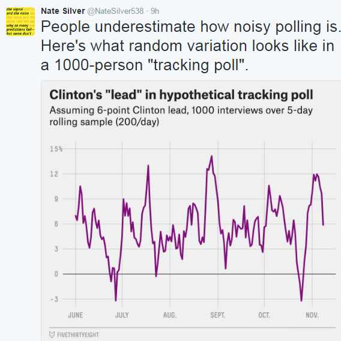
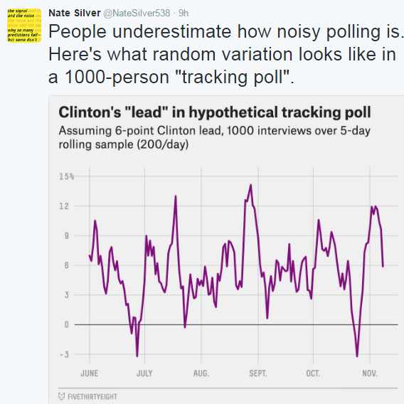

Undesrtanding PARCC
Ryan Knight
This is Part 1 in the series Undesrtanding PARCC. The goal of this section is to offer a general introduction into what tests measure and discuss the practical implications of measurement error for schools. I created this document because the process helped me to better understand the PARCC scores. I am interested in your thoughts / feedback – connect with me to share your perspectives.
Read subsequent sections
- Part 2: The PARCC Test
- Part 3: Item Response Theory
- Part 4: PARCC Scaled Scores
- Part 5: Massachusetts Framework
Measuring Student Ability
Imagine: A student arrives at school on state testing day. She sits down, pencil in hand, ready to take the PARCC. As she is about to start, we split the world into 30 parallel universes. Everything is the same in every universe up to the moment she starts taking the test.
Does she get the same result in every universe?
No.
A student’s test result is an estimate of their true ability with measurement error.
The same child taking the same test under the same conditions in identical universes would get different results. It is important to understand this measurement error is random.
It’s not whether the student had breakfast that morning – that would affect the student’s ability. It’s not whether the test has a cultural reference accessible to only a certain portion of the population – that would bias the estimate of ability. It’s just random. Measurement error is present in every test, no matter how well designed.
How much does this measurement error matter? Probably a lot. As one benchmark, PARCC estimates that about one in three students would have been classified at a different level if they had used a different test booklet.
A test is a noisy estimate of an individual student’s ability. It’s not that it contains no information about student ability. It’s just imprecise information.
To return to our student split across 30 universes: any one universe would not yield a precise estimate of her ability. However, if we could look across all universes, in some she would be lucky and perform high, and others she would be unlucky and perform low. Because measurement error is random, all of this variation would tend to average out, and her average performance across all universes would be close to her true ability.
Unfortunately, we don’t have multiple universes available to us. We get only one result per student. However, we do have many students.
PARCC results are intended to be aggregated across many students to reduce the influence of measurement error. As sample size increases, the average performance approximates the true average ability.
A classroom average is a better estimate of the classroom’s average ability than an individual student’s results are of individual student ability. A grade level’s results are a better estimate than a classroom. A school’s results are a better estimate than a grade level. A district’s results are a better estimate than a school. A state’s results are a better estimate than a district.
What does all this mean?
There are three practical take-aways for schools.
(1) Many of the ‘patterns’ that we see are noise
 

A typical threshold for statistical significance in education research is that there should be a 95% probability that the results are not due to chance. This means that there is a 1 in 20 (5%) probably that ‘statistically significant’ results are due to chance. In a class of 20 students, it’s likely that at least one student will have outlier results that are due to chance.
(2) Larger samples reduce the influence of noise
| Tosses | Heads | Probality of Heads |
|---|---|---|
| 4 | 1 | 0.25 |
| 100 | 64 | 0.64 |
| 1000 | 582 | 0.582 |
| 10000 | 4989 | 0.4989 |
Even at the school and grade level, it is likely that we tend to underestimate the influence of random variation. However, larger samples sizes are more likely to be stable, so we can have more confidence in trends at the teacher, grade and school level.
(3) Using more information reduces the influence of noise
What’s more, the value of any test depends on how likely you are to be having a significant problem in the first place. If you have crushing chest pain and shortness of breath, you start with a high likelihood of having a serious heart condition, and an electrocradiogram as significant value. A heart tracing that doesn’t look quite right usually means trouble. Buf, if you have no signs or symptoms of heart trouble, an electrocardiogram adds no useful information; a heart tracing that doesn’t look quite right is mostly noise.
We should not consider test results in isolation. We should bring in additional information whenever possible. If a grade level has a high number of suspension, low attendance rates, poorly kept gradebooks, teachers with documented performance issues, low interim assessment performance and low PARCC results, it is not likely that the results are noise. If a grade level has great student culture, rigorous classwork, high BA performance and lackluster PARCC performance, we should revise our opinion of that grade level downward, but we should not conclude that the year was a failure.
We should be rigorous in our approach to integrating outside information. If outside information is incorrect, it makes our conclusions worse. Triangulating results using data is usually better than triangulating using impressions or assumptions. But even impressions and assumptions can sometimes add value.